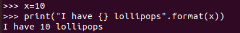

Day10
Objective
Integration of python with docker
New terms
Docker image : The iso image of OS that we going to install can be termed as docker image.
~~~~~~~~~~~~~~~~~~~~~~~~~~~~~~~~~
Container : The OS we going to install on docker is called the container.
python tips
Substitute a variable value in the string

Using index value we can assign the value
Docker tips:
Read More at:
#systemctl status docker To check status of docker service
#docker images To check present docker images
#docker ps To check running containers
#docker run -t -i <Imageid> To run a specific OS with (i)nteractive (t)erminal